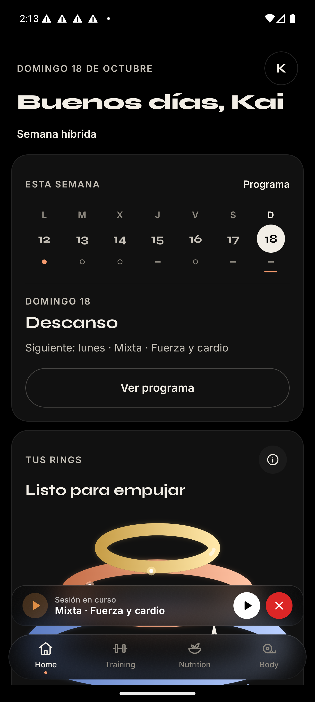

Captura nativa real frente a reconstrucción HTML. Escala física equivalente: 1 dp = 1 CSS px; 1344 × 2992 a densidad 3 = 448 × 997,33. Las barras del sistema se representan aparte del contenido de la app. Esta comparación no acredita aprobación visual.
01 · Android real · 18 oct · captura de referencia

02 · HTML · mismas fuentes y geometría base
El contenido inicial conserva el estado de la captura: domingo 18, Descanso y Mixta en curso. Tocar otro día cambia la sesión del módulo; tocar RINGS abre su detalle.
Fuentes locales Syne e Inter con OFL, iconos KPKN Line y torre derivada de TowerShapes. Ninguna dependencia de red.